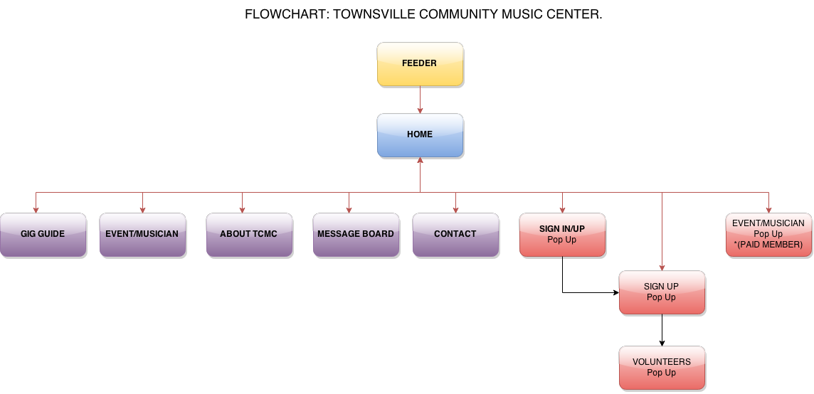

CP1406/CP2010 - 2015 - TCMC Project Plan
Tomato Websters
Members: Parminder Singh, Graeme Broomhall, Melissah Norris, Kurt Schoenhoff
Mission Statement
The new website must sell more tickets, attract new members and increse member engagement. The website must also be easier to maintain.
Success Evaluation
Increase online ticket sales by 20%. Increase paying members by 20%. Double the number of volunteer hours. Reduce hours spent on website maintinence by 90%.
Target Audience
Target audience is people passionate about music especially the local and wider community, generally 40+ and having a current or historical background in music. i.e. current/ex musical performers, music teachers, students, technicians, dancers.
Content
*note1 - All signup call to action not on the landing page are dynamicly changed to a volunteer call to arms once user has logged in.
*note2 - via the permisions for a logged in user an edit button for each editable object will appear if user id allowed to edit.
*note3 - if a user is logged in under the RHS of the menu bar their name is displayed on a button, this button(active area??) has a dynamic list that allows user to logout/edit account/etc.
- Feeder Page
- Articles / pics about music and townsville. ideally having snippets of information from many events and artists. the idea being it should match many searches for music and clownsville.
- Page has many links but all of them point to the index page.
- index.html(landing Page)
- navigation bar
- call to action - event tickets(dynamic images/blurb about upcoming events)
- call to action - sign up/in(dynamic images/blurb showing some artists/bands / volunteers / past events)
- normal content - small contacts
- normal content - small aboutUs
- normal content - small click to signUp/signin
- normal content - small click to upcoming events
- normal content - small click to artists/bands
- normal content - small click to Sponsors
- artists/bands.html
- navigation bar
- small call to action - sign up/in(dynamic images/blurb showing some artists/bands / volunteers / past events)
- small call to action - event tickets(dynamic images/blurb about upcoming events)
-
Major content - List of artists showing their PromoIcon and short blurb. click to expand into full bio and large picture also contains contact/links details
- normal content - small contacts
- normal content - small aboutUs
- normal content - small click to signUp/signin
- normal content - small click to upcoming events
- normal content - small click to Sponsors
- upcomingEvents.html
- navigation bar
- small call to action - sign up/in(dynamic images/blurb showing some artists/bands / volunteers / past events)
- small call to action - Volunteer for an event(dynamic images/blurb showing vollies having fun / slight guilt trip to encourage volunteering)
-
Major content - List of events showing their PromoIcon and short blurb. click to expand into full event details and large picture also contains contact/links/tickests details
- normal content - small contacts
- normal content - small aboutUs
- normal content - small click to signUp/signin
- normal content - small click to Sponsors
- MessageBoard.html
- navigation bar
- small call to action - create message / sign up/in(dynamic images/blurb showing some artists/bands / volunteers / past events)
- small call to action - event tickets(dynamic images/blurb about upcoming events)
-
Major content - List of Message stubs to dynamicly expanded if you click on the message.
- normal content - small contacts
- normal content - small aboutUs
- normal content - small click to signUp/signin
- normal content - small click to Sponsors
- normal content - small click to artists/bands
- aboutUs.html
- navigation bar
- small call to action - sign up/in(dynamic images/blurb showing some artists/bands / volunteers / past events)
- small call to action - event tickets(dynamic images/blurb about upcoming events)
-
Major content - About the TCMC. Reading type cpntent page with the about us and history details.
- normal content - small contacts
- normal content - small aboutUs
- normal content - small click to signUp/signin
- normal content - small click to Sponsors
- normal content - small click to artists/bands
- sponsors.html
- navigation bar
- small call to action - sign up/in(dynamic images/blurb showing some artists/bands / volunteers / past events)
- small call to action - event tickets(dynamic images/blurb about upcoming events)
-
Major content - Display sponsor logo's, some info and a thankyou's
- normal content - small contacts
- normal content - small aboutUs
- normal content - small click to signUp/signin
- normal content - small click to artists/bands
- signUpIn.html(popup page)
- Call to action signup
- content page shows sign in fields with buttons, signin, cancel, forgot password, email admin.
- signUp.html(popup page) - same page used for editing
- Call to action volunteer - dynamic images of volunteers having fun
- Call to action create artisit page
- content page shows signup fields with button to continue which creates user and goes to volunteer signup
- volunteerSignup.html(popup page)
- Call to action volunteer - dynamic images of volunteers having fun
- content page shows volunteer fields which are emailed to site admin or volunteer co-ordinator
- bandCreate.html(popup page) - same page used for editing
- Call to action bands - dynamic images of bands
- content page allows entry of bands fields which are added to database
- msgCreate.html(popup page) - same page used for editing
- Call to action upcoming events - dynamic images of events/etc
- content page allows entry of message details to database
- eventCreate.html(popup page) - same page used for editing
- Call to action upcoming events - dynamic images of events/etc
- content page allows entry of event details to database
- admin.html(popup page)
- content page allows admin to edit genre etc and allows editing of other ares by providing a link to them.
Site Flowchart (Structure Diagram)
...
GitHub Repository
Tomato-WebstersA2